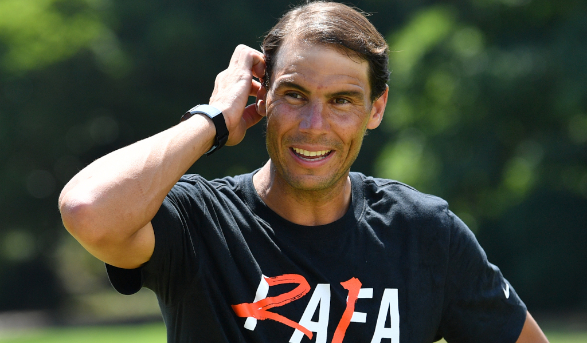

Rafa Nadal making his comeback from injury at the Madrid Open is ‘risky’, says Eurosport’s Alex Corretja:
In a regular situation he might be ready to play Madrid, but is Madrid the perfect place for Rafa to come back? Knowing that it’s the altitude and that through the clay-court season, that was the place that he usually felt a little bit more uncomfortable because he’s got so much power and he doesn’t control the ball as much as he likes, he’s got some opponents that hurt him in Madrid that usually don’t do [so] in a sea-level place.
So is he going to be ready for Madrid? Maybe he is ready, but I’m not so sure that it will be his pick to get back in Madrid. If he’s healthy, probably he will go, but I think he will need to think what is best for him in order to be perfect for Roland Garros because [whilst] it would be great if he can be in Madrid and it would be unbelievable if he can be in Rome, he can’t hide that his main goal is to be perfect for Paris.
